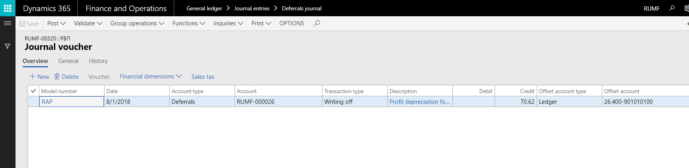
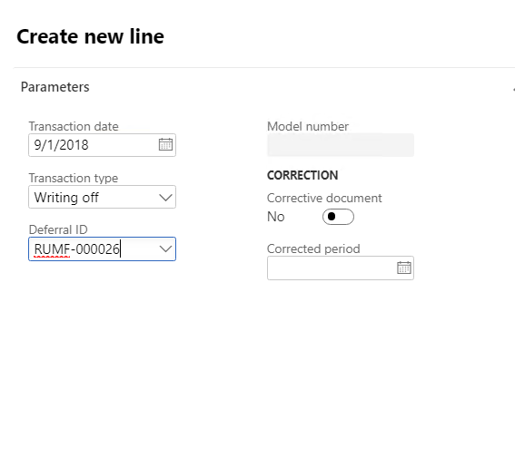

Write off deferrals (Russia)
Write off deferrals
Go to General ledger > Journal entries > Deferrals journal.
On the Action Pane, select New.
In the Name field, select a journal name.
On the Action Pane, select Lines to open the Journal voucher page.
On the Action Pane, select Group operations > Writing off to open the Deferrals writing off dialog box.
In the Transaction date field, select the transaction date.
On the Records to include FastTab, select Filter to open the Inquiry dialog box, where you can set up the selection criteria.
Select OK to return to the Journal voucher page. Details for deferrals write-off vouchers that have a status of In Process are shown, based on the filter parameters that you set up in the Inquiry dialog box.

On the Action Pane, select Functions > Edit line to edit the deferrals journal before you post it.
On the Action Pane, select Post > Post to post the deferrals write-off voucher details.
You can create a journal line for a single write-off.
Go to General ledger > Journal entries > Deferrals journal.
On the Action Pane, select New.
In the Name field, select a journal name.
On the Action Pane, select Lines to open the Journal voucher page.
On the Overview tab, select New to create a line.
In the Transaction type field, select Writing off.
In the Deferral ID field, select the deferral to create a receipt transaction for.
The fields in the Correction section of the Create new line dialog box are used to create a corrective transaction for a closed period.

Select OK. Voucher lines are created for the selected deferral on the Journal voucher page.
On the Action Pane, select Functions > Edit line to edit the deferrals journal before you post it.
On the Action Pane, select Post > Post to post the deferrals write-off voucher details.
Reverse the writing off of deferrals
- Go to General ledger > Journal entries > Deferrals journal.
- On the Action Pane, select New.
- In the Name field, select a journal name.
- On the Action Pane, select Lines to open the Journal voucher page.
- On the Action Pane, select Group operations > Writing off reversal to open the Writing off reversal dialog box.
- In the Reversal date field, select the transaction date.
- On the Records to include FastTab, select Filter to open the Inquiry dialog box, where you can set up the selection criteria.
- Select OK to return to the Journal voucher page.
- On the Action Pane, select Post > Post to post the reversal voucher. The deferrals and ledger transactions that are specified in the posting profile are generated.